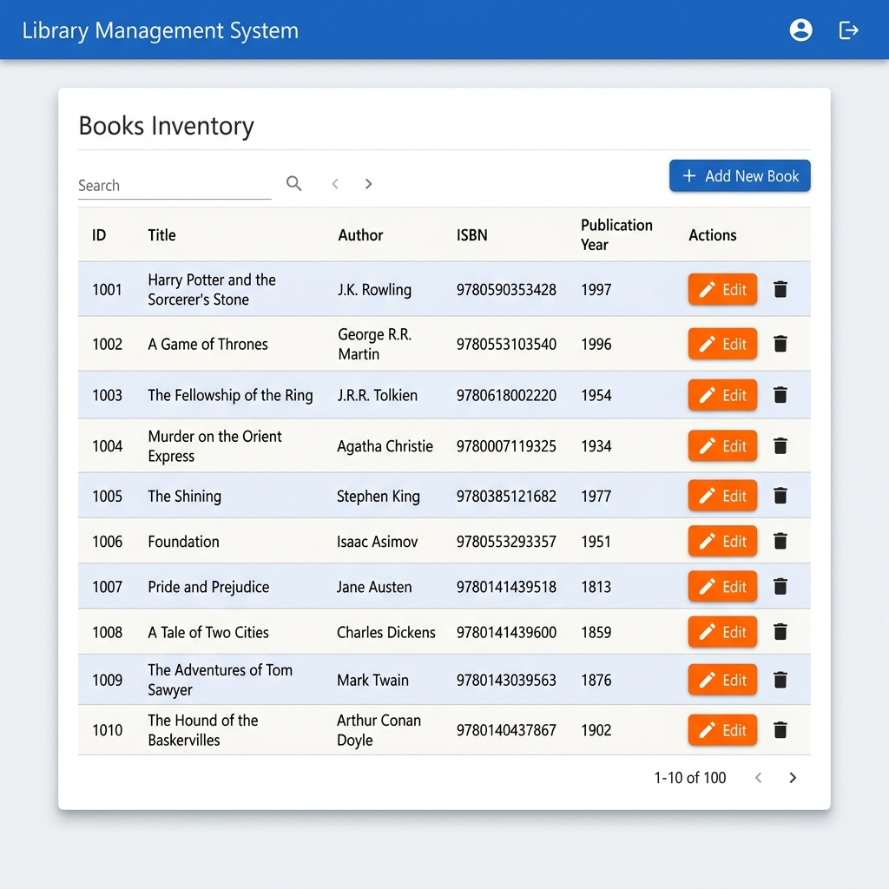
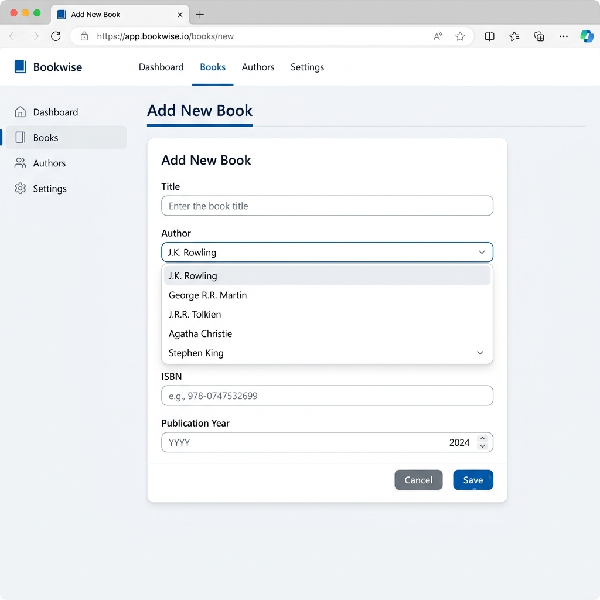
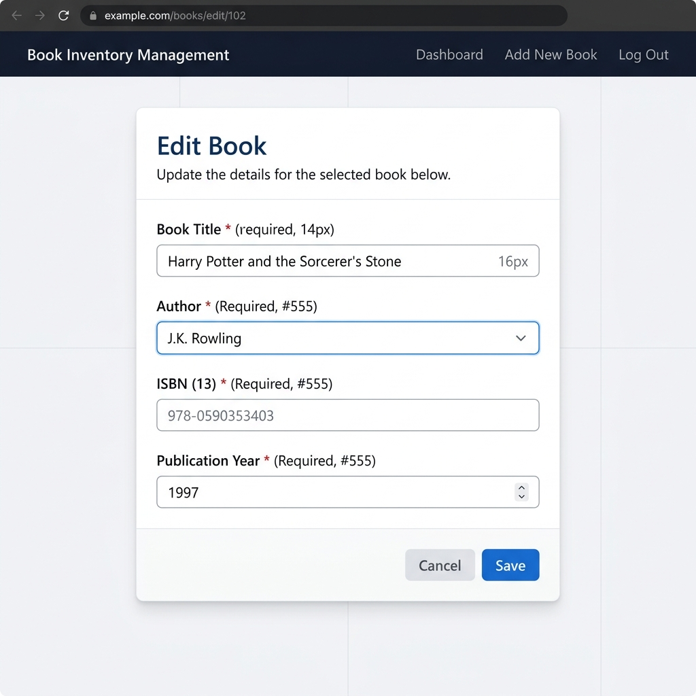

This project is a Library Management System built using Spring Boot. It manages two entities — Author and Book — and demonstrates core CRUD operations (Create, Read, Update) through a web interface built with JSP pages. The application uses an H2 in-memory database, Spring Data JPA for persistence, and follows a layered architecture with separate Repository, Service, and Controller components.
| Entity | Attributes |
|---|---|
| Author | id (PK), name, biography |
| Book | id (PK), title, isbn (unique), publicationYear, author_id (FK) |
The relationship between the two entities is One-to-Many:
This is implemented using:
@OneToMany(mappedBy = "author") on the Author entity.@ManyToOne with @JoinColumn(name = "author_id") on the Book entity.┌──────────────────────┐ ┌──────────────────────────────┐
│ AUTHORS │ │ BOOKS │
├──────────────────────┤ ├──────────────────────────────┤
│ id (PK, BIGINT) │──┐ │ id (PK, BIGINT) │
│ name (VARCHAR, NN) │ │ │ title (VARCHAR, NN) │
│ biography (VARCHAR) │ │ │ isbn (VARCHAR, UNIQUE, NN) │
└──────────────────────┘ │ │ publication_year (INT) │
└──────>│ author_id (FK, BIGINT, NN) │
1 * └──────────────────────────────┘
Legend: PK = Primary Key, FK = Foreign Key, NN = Not Null
application.propertiesspring.application.name=library-app
# H2 Database configuration
spring.datasource.url=jdbc:h2:mem:librarydb
spring.datasource.driverClassName=org.h2.Driver
spring.datasource.username=sa
spring.datasource.password=password
spring.jpa.database-platform=org.hibernate.dialect.H2Dialect
# Enable H2 console
spring.h2.console.enabled=true
spring.h2.console.path=/h2-console
# Show SQL queries
spring.jpa.show-sql=true
spring.jpa.properties.hibernate.format_sql=true
# Initialize database schema and data
spring.jpa.hibernate.ddl-auto=create-drop
spring.sql.init.mode=always
spring.jpa.defer-datasource-initialization=true
# JSP View Resolver configuration
spring.mvc.view.prefix=/WEB-INF/jsp/
spring.mvc.view.suffix=.jsp
Key Dependencies (pom.xml):
spring-boot-starter-web — Spring MVCspring-boot-starter-data-jpa — JPA / Hibernatespring-boot-starter-validation — Bean Validationh2 — In-memory databasetomcat-embed-jasper — JSP renderingjakarta.servlet.jsp.jstl-api & jakarta.servlet.jsp.jstl — JSTL tag librariesAuthor.javapackage com.example.libraryapp.entity;
import jakarta.persistence.*;
import jakarta.validation.constraints.NotBlank;
import java.util.List;
@Entity
@Table(name = "authors")
public class Author {
@Id
@GeneratedValue(strategy = GenerationType.IDENTITY)
private Long id;
@NotBlank(message = "Name is mandatory")
@Column(nullable = false)
private String name;
@Column(length = 1000)
private String biography;
@OneToMany(mappedBy = "author", cascade = CascadeType.ALL, fetch = FetchType.LAZY)
private List<Book> books;
// Constructors, Getters, and Setters omitted for brevity
}
Key JPA Annotations Used:
@Entity — Marks the class as a JPA entity@Table(name = "authors") — Maps to the authors table@Id / @GeneratedValue — Primary key with auto-increment@NotBlank — Validation constraint@OneToMany(mappedBy = "author") — Defines the inverse side of the relationshipBook.javapackage com.example.libraryapp.entity;
import jakarta.persistence.*;
import jakarta.validation.constraints.Min;
import jakarta.validation.constraints.NotBlank;
import jakarta.validation.constraints.NotNull;
@Entity
@Table(name = "books")
public class Book {
@Id
@GeneratedValue(strategy = GenerationType.IDENTITY)
private Long id;
@NotBlank(message = "Title is mandatory")
@Column(nullable = false)
private String title;
@NotBlank(message = "ISBN is mandatory")
@Column(unique = true, nullable = false)
private String isbn;
@NotNull(message = "Publication year is mandatory")
@Min(value = 1000, message = "Invalid year")
@Column(name = "publication_year")
private Integer publicationYear;
@ManyToOne(fetch = FetchType.EAGER)
@JoinColumn(name = "author_id", nullable = false)
private Author author;
// Constructors, Getters, and Setters omitted for brevity
}
Key JPA Annotations Used:
@ManyToOne — Owning side of the relationship@JoinColumn(name = "author_id") — Foreign key column@Column(unique = true) — Unique constraint for ISBN@Min(value = 1000) — Validates publication yearAuthorRepository.java@Repository
public interface AuthorRepository extends JpaRepository<Author, Long> {
}
BookRepository.java@Repository
public interface BookRepository extends JpaRepository<Book, Long> {
// Custom query method performing an inner join between Books and Authors
@Query("SELECT b FROM Book b JOIN FETCH b.author")
List<Book> findAllBooksWithAuthors();
}
Custom Query Explanation:
SELECT b FROM Book b JOIN FETCH b.author performs an INNER JOIN between the books and authors tables.JOIN FETCH eagerly loads the associated Author for each Book in a single SQL query, avoiding the N+1 query problem.SELECT * FROM books b INNER JOIN authors a ON b.author_id = a.idAuthorService.java@Service
public class AuthorService {
private final AuthorRepository authorRepository;
@Autowired
public AuthorService(AuthorRepository authorRepository) {
this.authorRepository = authorRepository;
}
public List<Author> findAllAuthors() {
return authorRepository.findAll();
}
public Author findById(Long id) {
return authorRepository.findById(id)
.orElseThrow(() -> new IllegalArgumentException("Invalid author Id:" + id));
}
@Transactional
public Author saveAuthor(Author author) {
return authorRepository.save(author);
}
}
BookService.java@Service
public class BookService {
private final BookRepository bookRepository;
@Autowired
public BookService(BookRepository bookRepository) {
this.bookRepository = bookRepository;
}
public List<Book> findAllBooks() {
return bookRepository.findAllBooksWithAuthors(); // Using custom query method
}
public Book findById(Long id) {
return bookRepository.findById(id)
.orElseThrow(() -> new IllegalArgumentException("Invalid book Id:" + id));
}
@Transactional
public Book saveBook(Book book) {
try {
return bookRepository.save(book);
} catch (Exception e) {
throw new RuntimeException(
"Could not save book. Please ensure ISBN is unique and data is valid.", e);
}
}
}
Key Design Decisions:
@Autowired@Transactional on write operations for data consistencysaveBook() catches data integrity violations (e.g., duplicate ISBN) and re-throws a user-friendly messageLibraryController.java@Controller
@RequestMapping("/")
public class LibraryController {
private final BookService bookService;
private final AuthorService authorService;
@Autowired
public LibraryController(BookService bookService, AuthorService authorService) {
this.bookService = bookService;
this.authorService = authorService;
}
@GetMapping
public String index() {
return "redirect:/books";
}
// Read Operation
@GetMapping("/books")
public String listBooks(Model model) {
model.addAttribute("books", bookService.findAllBooks());
return "book-list";
}
// Show Create Form
@GetMapping("/books/add")
public String showAddForm(Model model) {
model.addAttribute("book", new Book());
model.addAttribute("authors", authorService.findAllAuthors());
return "book-form";
}
// Show Update Form
@GetMapping("/books/edit/{id}")
public String showUpdateForm(@PathVariable("id") Long id, Model model) {
Book book = bookService.findById(id);
model.addAttribute("book", book);
model.addAttribute("authors", authorService.findAllAuthors());
return "book-form";
}
// Create / Update Operation
@PostMapping("/books/save")
public String saveBook(@Valid @ModelAttribute("book") Book book,
BindingResult result,
Model model,
RedirectAttributes redirectAttributes) {
if (result.hasErrors()) {
model.addAttribute("authors", authorService.findAllAuthors());
return "book-form";
}
try {
bookService.saveBook(book);
redirectAttributes.addFlashAttribute("successMessage", "Book saved successfully!");
} catch (RuntimeException e) {
model.addAttribute("errorMessage", e.getMessage());
model.addAttribute("authors", authorService.findAllAuthors());
return "book-form";
}
return "redirect:/books";
}
}
Controller Endpoints:
| Method | URL | Purpose |
|---|---|---|
| GET | / |
Redirect to /books |
| GET | /books |
List all books (Read) |
| GET | /books/add |
Show Add Book form (Create) |
| GET | /books/edit/{id} |
Show Edit Book form (Update) |
| POST | /books/save |
Save new or updated book |
book-list.jsp — Book Listing Page<%@ page language="java" contentType="text/html; charset=UTF-8" pageEncoding="UTF-8"%>
<%@ taglib uri="http://java.sun.com/jsp/jstl/core" prefix="c" %>
<!DOCTYPE html>
<html>
<head>
<meta charset="UTF-8">
<title>Library - Book List</title>
<style>
body { font-family: 'Segoe UI', Tahoma, Geneva, Verdana, sans-serif;
background-color: #f4f7f6; margin: 0; padding: 20px; color: #333; }
.container { max-width: 1000px; margin: 0 auto; background: #fff;
padding: 30px; border-radius: 8px;
box-shadow: 0 4px 6px rgba(0,0,0,0.1); }
h1 { color: #2c3e50; border-bottom: 2px solid #3498db;
padding-bottom: 10px; }
.btn { padding: 10px 15px; color: #fff; background-color: #3498db;
text-decoration: none; border-radius: 5px; }
table { width: 100%; border-collapse: collapse; margin-top: 10px; }
th, td { padding: 12px; text-align: left; border-bottom: 1px solid #ddd; }
th { background-color: #ecf0f1; color: #2c3e50; }
</style>
</head>
<body>
<div class="container">
<h1>Library Management System</h1>
<c:if test="${not empty successMessage}">
<div class="alert alert-success">${successMessage}</div>
</c:if>
<a href="<c:url value='/books/add' />" class="btn">Add New Book</a>
<table>
<thead>
<tr>
<th>ID</th><th>Title</th><th>Author</th>
<th>ISBN</th><th>Publication Year</th><th>Actions</th>
</tr>
</thead>
<tbody>
<c:forEach var="book" items="${books}">
<tr>
<td>${book.id}</td>
<td>${book.title}</td>
<td>${book.author.name}</td>
<td>${book.isbn}</td>
<td>${book.publicationYear}</td>
<td>
<a href="<c:url value='/books/edit/${book.id}' />"
class="btn btn-edit">Edit</a>
</td>
</tr>
</c:forEach>
</tbody>
</table>
</div>
</body>
</html>
book-form.jsp — Add / Edit Book Form<%@ page language="java" contentType="text/html; charset=UTF-8" pageEncoding="UTF-8"%>
<%@ taglib uri="http://java.sun.com/jsp/jstl/core" prefix="c" %>
<!DOCTYPE html>
<html>
<head>
<meta charset="UTF-8">
<title>Library - Book Form</title>
<style>
/* Same base styling as book-list.jsp */
.form-group { margin-bottom: 15px; }
label { display: block; margin-bottom: 5px; font-weight: bold; }
input, select { width: 100%; padding: 10px; border: 1px solid #ccc;
border-radius: 4px; box-sizing: border-box; }
</style>
</head>
<body>
<div class="container">
<h1>${empty book.id ? 'Add New Book' : 'Edit Book'}</h1>
<c:if test="${not empty errorMessage}">
<div class="alert alert-danger">${errorMessage}</div>
</c:if>
<form action="<c:url value='/books/save' />" method="post">
<input type="hidden" name="id" value="${book.id}">
<div class="form-group">
<label for="title">Title:</label>
<input type="text" id="title" name="title"
value="${book.title}" required>
</div>
<div class="form-group">
<label for="author">Author:</label>
<select id="author" name="author.id" required>
<option value="">-- Select Author --</option>
<c:forEach var="author" items="${authors}">
<option value="${author.id}"
${book.author != null && book.author.id == author.id
? 'selected' : ''}>
${author.name}
</option>
</c:forEach>
</select>
</div>
<div class="form-group">
<label for="isbn">ISBN:</label>
<input type="text" id="isbn" name="isbn"
value="${book.isbn}" required>
</div>
<div class="form-group">
<label for="publicationYear">Publication Year:</label>
<input type="number" id="publicationYear" name="publicationYear"
value="${book.publicationYear}" required>
</div>
<div class="form-group">
<button type="submit" class="btn">Save</button>
<a href="<c:url value='/books' />" class="btn btn-cancel">Cancel</a>
</div>
</form>
</div>
</body>
</html>
The database is automatically populated when the application starts. The file src/main/resources/data.sql contains INSERT statements for 10 authors and 10 books:
-- Authors (10 rows)
INSERT INTO authors (name, biography) VALUES ('J.K. Rowling', 'British author...');
INSERT INTO authors (name, biography) VALUES ('George R.R. Martin', 'American novelist...');
INSERT INTO authors (name, biography) VALUES ('J.R.R. Tolkien', 'English writer...');
INSERT INTO authors (name, biography) VALUES ('Agatha Christie', 'English writer...');
INSERT INTO authors (name, biography) VALUES ('Stephen King', 'American author...');
INSERT INTO authors (name, biography) VALUES ('Isaac Asimov', 'American writer...');
INSERT INTO authors (name, biography) VALUES ('Jane Austen', 'English novelist...');
INSERT INTO authors (name, biography) VALUES ('Charles Dickens', 'English writer...');
INSERT INTO authors (name, biography) VALUES ('Mark Twain', 'American writer...');
INSERT INTO authors (name, biography) VALUES ('Arthur Conan Doyle', 'British writer...');
-- Books (10 rows)
INSERT INTO books (title, isbn, publication_year, author_id)
VALUES ('Harry Potter and the Sorcerer''s Stone', '978-0590353403', 1997, 1);
INSERT INTO books (title, isbn, publication_year, author_id)
VALUES ('A Game of Thrones', '978-0553103540', 1996, 2);
-- ... (8 more rows)
The configuration spring.jpa.defer-datasource-initialization=true ensures Hibernate creates the tables before the data.sql script runs.
Flow: User clicks "Add New Book" → Form is displayed → User fills in details → Submits → Book is saved to DB.
GET /books/add creates a new empty Book object and passes all authors to the view for the dropdown.book-form.jsp renders with empty fields (since book.id is null, the heading shows "Add New Book").POST /books/save validates the input using @Valid. If validation fails, the form is re-displayed with error messages. If the ISBN already exists, the catch block in the service captures the DataIntegrityViolationException and displays an error message.Flow: User navigates to /books → Controller fetches all books using the custom join query → Data is displayed in a table.
GET /books calls bookService.findAllBooks().bookRepository.findAllBooksWithAuthors(), which executes the custom @Query with an INNER JOIN between books and authors.book-list.jsp iterates using <c:forEach> and accesses the author name via Expression Language ${book.author.name}.Flow: User clicks "Edit" on a book row → Pre-populated form is displayed → User modifies details → Submits → Book is updated in DB.
GET /books/edit/{id} loads the existing book and passes it to the same book-form.jsp.book.id is not null, the heading changes to "Edit Book". A hidden <input type="hidden" name="id" value="${book.id}"> ensures that JPA performs an UPDATE instead of an INSERT.POST /books/save endpoint handles both create and update seamlessly.BookServiceTest.javaUses JUnit 5 with Mockito to test the service layer in isolation.
@ExtendWith(MockitoExtension.class)
public class BookServiceTest {
@Mock
private BookRepository bookRepository;
@InjectMocks
private BookService bookService;
private Book book;
private Author author;
@BeforeEach
void setUp() {
author = new Author("Test Author", "Bio");
author.setId(1L);
book = new Book("Test Title", "12345", 2023, author);
book.setId(1L);
}
@Test
void testFindAllBooks() {
when(bookRepository.findAllBooksWithAuthors()).thenReturn(Arrays.asList(book));
List<Book> books = bookService.findAllBooks();
assertNotNull(books);
assertEquals(1, books.size());
assertEquals("Test Title", books.get(0).getTitle());
verify(bookRepository, times(1)).findAllBooksWithAuthors();
}
@Test
void testFindById() {
when(bookRepository.findById(1L)).thenReturn(Optional.of(book));
Book found = bookService.findById(1L);
assertNotNull(found);
assertEquals("12345", found.getIsbn());
}
@Test
void testSaveBook() {
when(bookRepository.save(any(Book.class))).thenReturn(book);
Book savedBook = bookService.saveBook(book);
assertNotNull(savedBook);
assertEquals("Test Title", savedBook.getTitle());
verify(bookRepository, times(1)).save(book);
}
}
BookRepositoryTest.javaUses @DataJpaTest with an embedded H2 database to test the custom query.
@DataJpaTest
public class BookRepositoryTest {
@Autowired
private TestEntityManager entityManager;
@Autowired
private BookRepository bookRepository;
@Test
public void testFindAllBooksWithAuthors() {
Author author = new Author("Test Author 2", "Bio");
entityManager.persist(author);
Book book1 = new Book("Book 1", "111", 2000, author);
Book book2 = new Book("Book 2", "222", 2001, author);
entityManager.persist(book1);
entityManager.persist(book2);
entityManager.flush();
List<Book> books = bookRepository.findAllBooksWithAuthors();
assertThat(books).hasSizeGreaterThanOrEqualTo(2);
assertThat(books.get(0).getAuthor().getName()).isEqualTo("Test Author 2");
}
}
Displays all books fetched via the custom INNER JOIN query.

Form with fields for Title, Author (dropdown), ISBN, and Publication Year.

Same form pre-populated with existing book data for editing.

Problem: Spring Boot 3.x favors Thymeleaf as the default template engine. JSP requires additional configuration that is not included by default.
Solution: Added tomcat-embed-jasper and JSTL dependencies to pom.xml, and configured the view resolver in application.properties:
spring.mvc.view.prefix=/WEB-INF/jsp/
spring.mvc.view.suffix=.jsp
Problem: Spring Boot 2.5+ changed the database initialization behavior. data.sql was executing before Hibernate created the tables, resulting in "Table not found" errors.
Solution: Added the property spring.jpa.defer-datasource-initialization=true to ensure that Hibernate generates the schema first (ddl-auto=create-drop), and only then runs the data.sql script.
Problem: When displaying the book list, accessing book.getAuthor().getName() for each book triggered a separate SQL query per book, leading to poor performance with large datasets.
Solution: Implemented a custom JOIN FETCH query in the BookRepository:
@Query("SELECT b FROM Book b JOIN FETCH b.author")
List<Book> findAllBooksWithAuthors();
This fetches all books and their associated authors in a single SQL query via an inner join.
Problem: When submitting the book form, Spring MVC needed to bind the selected author dropdown value (an ID) to the Book.author object.
Solution: Used name="author.id" in the <select> element, which allows Spring MVC's data binder to automatically resolve the author by its ID through the JPA entity manager.
https://github.com/KADUMU0980/java-springboot
library-app/
├── pom.xml
├── src/
│ ├── main/
│ │ ├── java/com/example/libraryapp/
│ │ │ ├── LibraryAppApplication.java
│ │ │ ├── controller/
│ │ │ │ └── LibraryController.java
│ │ │ ├── entity/
│ │ │ │ ├── Author.java
│ │ │ │ └── Book.java
│ │ │ ├── repository/
│ │ │ │ ├── AuthorRepository.java
│ │ │ │ └── BookRepository.java
│ │ │ └── service/
│ │ │ ├── AuthorService.java
│ │ │ └── BookService.java
│ │ ├── resources/
│ │ │ ├── application.properties
│ │ │ └── data.sql
│ │ └── webapp/WEB-INF/jsp/
│ │ ├── book-list.jsp
│ │ └── book-form.jsp
│ └── test/java/com/example/libraryapp/
│ ├── repository/
│ │ └── BookRepositoryTest.java
│ └── service/
│ └── BookServiceTest.java
└── Project_Documentation.md